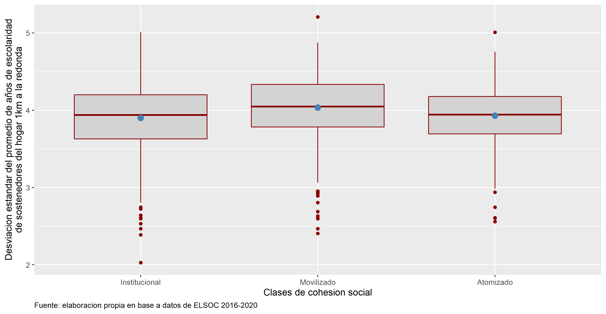
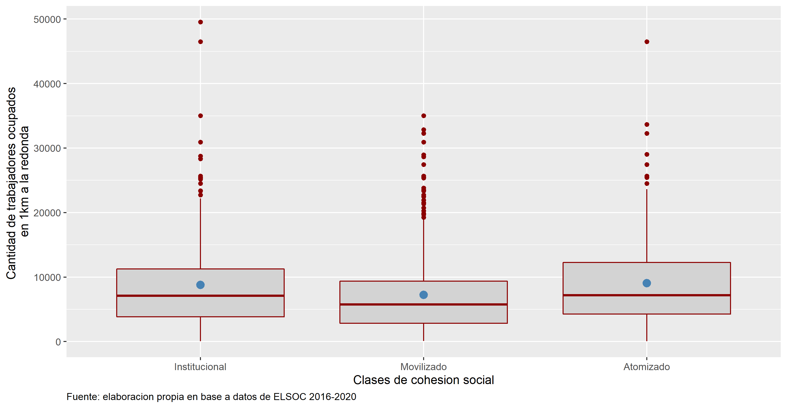
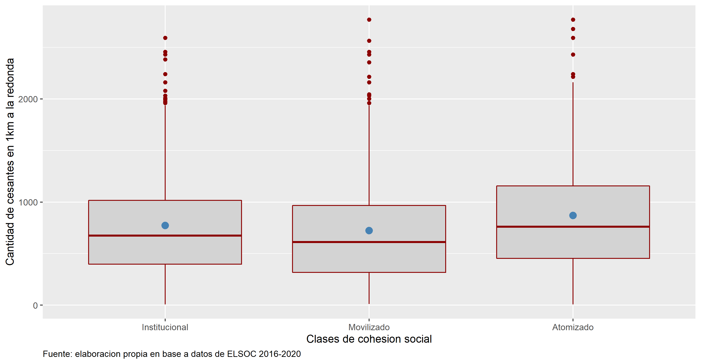
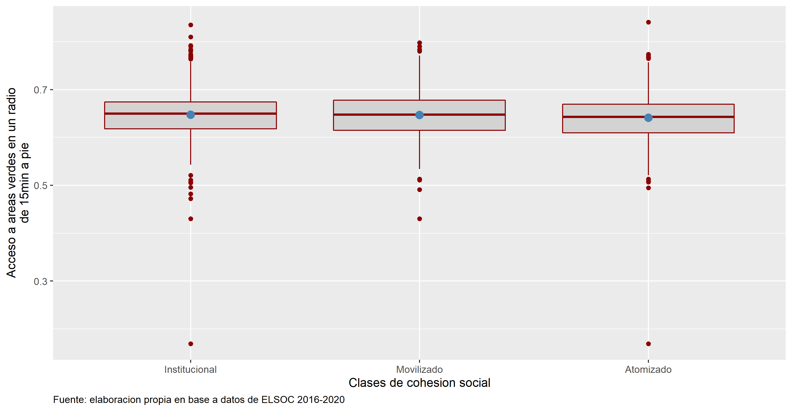
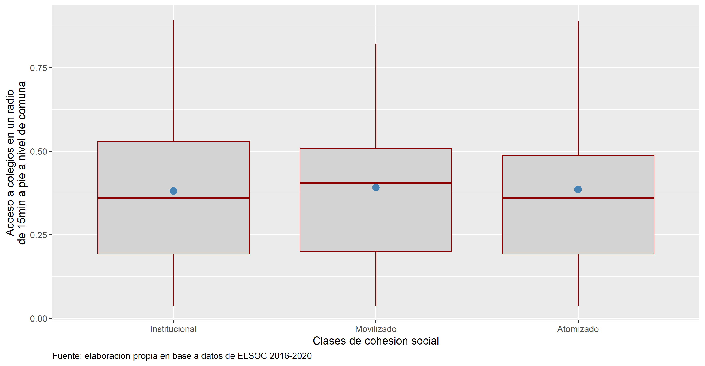

Capítulo 3 Habilitadores e inhibidores de la cohesión social
3.1 Versión 2. Perfiles de la cohesión social
Los capítulos anteriores entregaron una versión operacional de la cohesión social y mostraron su evolución en el tiempo. Este capítulo ofrece una visión sintética de la cohesión social a partir de las similitudes entre individuos. A tal fin se comparan los niveles individuales en las subdimensiones de la cohesión para establecer grupos a partir de sus similitudes.
La cohesión social y sus habilitadores se refieren a elementos estructurales que caracterizan un país. No obstante, dentro de un país puedan coexistir distintos niveles de cohesión, lo cual podría eventualmente afectar la cohesión global. La variación de la cohesión social dentro de un país refleja los diversos niveles de inclusión e integración de agrupaciones sociales –individuos o territorios– que pueden ir más allá del error aleatorio que acompaña toda medición.
3.1.1 Procedimiento. Tipología de clases latentes a partir de subdimensiones de cohesión
El análisis de la variación en los niveles de cohesión social dentro de la muestra utiliza los niveles individuales de las subdimensiones que componen la medida de cohesión social. Al tratarse de datos provenientes de encuestas debe existir una variación producto del error estadístico en la medida. Puede ocurrir, sin embargo, que algunos perfiles se desvíen más allá de lo esperable por el error en la medida, lo cual indica niveles de cohesión significativamente diferentes. El resultado del análisis consiste en la agrupación de individuos semejantes entre sí, pero diferentes de otros, por lo que reflejan niveles o formas de cohesión diversas. Este procedimiento se diferencia de las comparaciones de la posición en un índice sintético porque se construye a partir de la diferencia en los niveles de las subdimensiones, vale decir, considerando la estructura de respuesta.
Los procedimientos de clasificación automática comparan sistemáticamente los niveles de respuesta entre individuos utilizando una medida de distancia para su similitud. El análisis de clases latentes (ACL) supone que los niveles observados corresponden a una variable subyacente con dos o más categorías. El ACL ubica la clasificación en el marco de los modelos de ecuaciones estructurales, modelando las covarianzas y proveyendo parámetros para el error de medida o varianza de los indicadores. Otros procedimientos de clasificación automática no diferencian varianza y covarianza lo cual puede llevar a resultados menos estables.
Aclarar cómo se cortan las clases .

3.1.2 Descripción. Mapeo en Chile de niveles de cohesión por regiones (mapas de calor)
Las agrupaciones obtenidas a partir del ACL será representada en los territorios de forma que se pueda apreciar la pauta predominante en cada región del país.
| Clases de cohesión social | Institucional | Movilizado | Atomizado | N=100% |
|---|---|---|---|---|
| Antofagasta | 60.0 | 25.7 | 14.3 | 35 |
| Araucania | 36.4 | 39.7 | 24.0 | 121 |
| Atacama | 51.9 | 22.2 | 25.9 | 54 |
| Aysen | 63.6 | 18.2 | 18.2 | 11 |
| Bio Bio | 37.8 | 38.2 | 24.0 | 275 |
| Coquimbo | 28.2 | 42.4 | 29.4 | 85 |
| Lib. Gral. B. Ohiggins | 56.6 | 20.8 | 22.6 | 53 |
| Los Lagos | 48.5 | 30.3 | 21.2 | 33 |
| Los Rios | 12.9 | 74.2 | 12.9 | 31 |
| Maule | 38.8 | 38.8 | 22.3 | 121 |
| Metropolitana | 47.8 | 26.6 | 25.6 | 425 |
| Tarapaca | 54.5 | 27.3 | 18.2 | 22 |
| Valparaiso | 46.4 | 28.1 | 25.4 | 224 |
| N=100% | 644.0 | 485.0 | 361.0 | 1490 |
3.1.3 Análisis. Tablas con niveles de cohesión por elementos habilitadores
Los procesos que producen cohesión social están lejos de responder a modelos sencillos y requieren análisis detallados #FALTAN REFERENCIAS#. En este capítulo presentamos de forma descriptiva tabulaciones sencillas destinados a mostrar los efectos directos de los factores que se hipotetiza están asociado con la cohesión social. El análisis busca establecer el efecto de los factores habilitadores sobre la tipología de cohesión social presentada en la primera parte del capítulo. Los factores habilitadores están clasificados en seis grupos, a saber: Edad, Educación, Nivel de ingreso, Etnia, Nacionalidad, Aislamiento territorial.
La medida de aislamiento territorial registra las características del área correspondiente a 1km de radio desde el centro de la manzana en que reside el respondente, lo cual puede asimilarse con un barrio. Los datos demográficos provienen del censo 2012 y los de condición urbana a bases de datos del CIT.
3.1.3.1 Inclusión laboral
El acceso al mercado de trabajo se encuentra estrechamente asociado con el bienestar de las personas. En efecto, la superación de la pobreza depende en gran medida de la inserción laboral. En América Latina, Chile no es una excepción, las condiciones de trabajo informal, asociadas con pobreza y precariedad comprenden una parte significativa de la fuerza de trabajo. Las inserciones más débiles en el mercado de trabajo podrían afectar negativamente los niveles de cohesión social.
| Clases de cohesión social | Formal | Informal | N=100% |
|---|---|---|---|
| Institucional | 55.7 | 43.6 | 467 |
| Movilizado | 23.5 | 34.1 | 246 |
| Atomizado | 20.8 | 22.3 | 193 |
| N=100% | 592.0 | 314.0 | 906 |
3.1.3.2 Inclusión social
Hay diversas dimensiones en las brechas de participación en las condiciones de vida que una sociedad ofrece a sus integrantes.
- La etapa de transición demográfica en que se encuentra Chile muestra un peso creciente de los adultos mayores, quienes enfrentan condiciones de vida difíciles, por lo que se podría esperar menores niveles de cohesión social entre ellos.
- La edad está medida en años
| Clases de cohesión social | Entre 18 y 29 | Entre 30 y 39 | Entre 40 y 49 | Entre 50 y 59 | Mas de 60 | N=100% |
|---|---|---|---|---|---|---|
| Institucional | 66.3 | 57.0 | 49.6 | 39.7 | 21.8 | 644 |
| Movilizado | 9.1 | 14.3 | 27.7 | 35.2 | 57.2 | 485 |
| Atomizado | 24.6 | 28.7 | 22.7 | 25.1 | 21.0 | 361 |
| N=100% | 175.0 | 286.0 | 264.0 | 375.0 | 390.0 | 1490 |
- El sexo de las personas afecta sus posibilidades de inclusión atendiendo a las pautas de roles asociadas con una sociedad patriarcal.
| Clases de cohesión social | Hombre | Mujer | N=100% |
|---|---|---|---|
| Institucional | 47.7 | 40.8 | 644 |
| Movilizado | 31.7 | 33.0 | 485 |
| Atomizado | 20.6 | 26.2 | 361 |
| N=100% | 520.0 | 970.0 | 1490 |
- El acceso a la educación constituye un fuerte principio estructurador en la sociedad chilena, generalmente asociado con el status socioeconómico y, en sus niveles más altos, con la reproducción en los círculos sociales más deseables. En la medida que la fase de expansión en el acceso a la educación universitaria es relativamente reciente, puede esperarse mayor cohesión social entre las personas que hay tenido mayor exposición al sistema forma de educación.
- La educación en 4 grupos: Básica, media, técnica y universitaria #probar años u otra clasificación#
| Clases de cohesión social | Educacion basica o menos | Educacion media | Educacion tecnica superior | Educacion universitaria o Postgrado | N=100% |
|---|---|---|---|---|---|
| Institucional | 21.2 | 44.4 | 57.1 | 72.7 | 644 |
| Movilizado | 50.0 | 27.9 | 21.4 | 15.9 | 485 |
| Atomizado | 28.8 | 27.7 | 21.4 | 11.4 | 360 |
| N=100% | 528.0 | 459.0 | 238.0 | 264.0 | 1489 |
- Los ingresos de las personas se encuentran estrechamente asociados con los niveles de educación, si bien en niveles menores a la enseñanza superior pueden encontrarse grandes variaciones. Por lo anterior es posible que el nivel de ingresos tenga un efecto independiente de la educación.
- Los niveles de ingreso están medidos en quintiles #no incluir los que no lo reportan. #
| Clases de cohesión social | Quintil 1 | Quintil 2 | Quintil 3 | Quintil 4 | Quintil 5 | N=100% |
|---|---|---|---|---|---|---|
| Institucional | 20.6 | 38.1 | 39.1 | 48.4 | 69.5 | 615 |
| Movilizado | 49.7 | 33.6 | 33.5 | 27.7 | 18.6 | 465 |
| Atomizado | 29.7 | 28.3 | 27.5 | 23.9 | 11.9 | 346 |
| N=100% | 286.0 | 286.0 | 284.0 | 285.0 | 285.0 | 1426 |
La segregación territorial, especialmente la que se encuentra asociada con el nivel socioeconómico constituye un rasgo distintivo de los países latinoamericanos, del cual Chile no escapa. Por la naturaleza de los datos, no es posible hacer distinciones entre rural y urbano. Un primer nivel de la segregación se refiere a la dominancia urbana que posee la capital del país, asociada también con acceso a mejores servicios, por lo que se pueden esperar diferentes niveles de cohesión social al comparar Santiago y el resto de las regiones.
El concepto de aislamiento social de los territorios fue acuñado por William Julius Wilson para explicar la condición de áreas urbanas de Chicago caracterizadas por concentración de la pobreza, desempleo, bajos niveles de escolaridad y reducida integración en la fuerza de trabajo. Su explicación apunta a que la vida en un vecindario donde la mayor parte de la población se encuentra en una situación de desventaja social constriñe las oportunidades de inclusión social. Los elementos de desventaja social pueden especificarse con el acceso a recursos públicos tales como servicios públicos, conectividad, fuentes de trabajo y centros de consumo. En los territorios limitados en estos aspectos sería más improbable que florezca la cohesión social.
- Promedio años escolaridad de sostenedores en 1 km a la redonda #preferir desv estándar# 
- Número de trabajadores/as (ocupados??) en 1 km a la redonda #usar también inactivos# 
- Número de cesantes en 1 km a la redonda 
- Acceso areas verdes en radio de 15 min a pie #aclarar definición# ¿media de la ciudad? 
- Acceso a colegios en radio de 15 min a pie #aclarar definición# ¿media de la ciudad? 
- Acceso a servicios en radio de 15 min a pie #aclarar definición# ¿media de la ciudad?

La pertenencia a pueblos indígenas ha estado asociado con bajos niveles de inclusión social. Por mucho tiempo invisibilizada, en las últimas dos décadas el estado chileno ha reconocido la existencia de pueblos indígenas acordando diversos beneficios sociales asociados con esta condición. Como contrapartida, el reconocimiento de la condición de indígena ha conllevado a un fortalecimiento de la identidad étnica.
| Clases de cohesión social | Ninguna | Pertenece a una etnia | N=100% |
|---|---|---|---|
| Institucional | 42.3 | 50.0 | 636 |
| Movilizado | 33.5 | 26.7 | 481 |
| Atomizado | 24.2 | 23.3 | 355 |
| N=100% | 1300.0 | 172.0 | 1472 |
- Vinculado con lo anterior, en la última década la condición étnica ha sido progresivamente asociada con la condición de migrante.
| Clases de cohesión social | Nacionalidad chilena | Otra nacionalidad | N=100% |
|---|---|---|---|
| Institucional | 43.4 | 33.3 | 644 |
| Movilizado | 32.6 | 29.6 | 485 |
| Atomizado | 24.0 | 37.0 | 361 |
| N=100% | 1463.0 | 27.0 | 1490 |